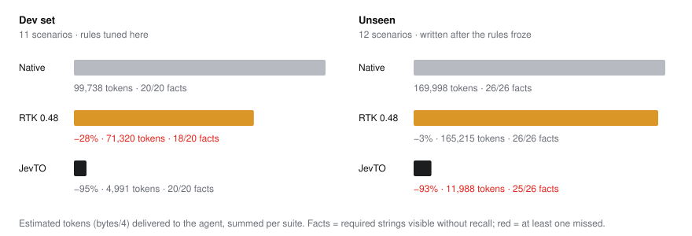
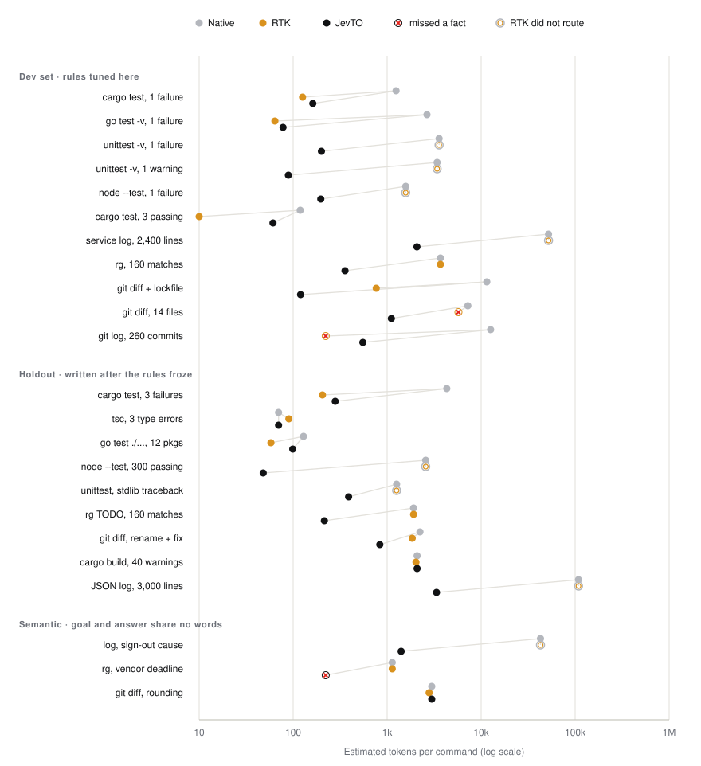
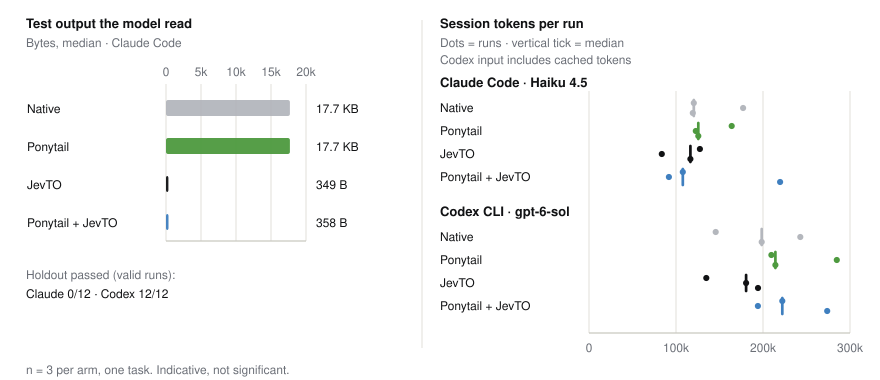

Less tool output.
Exact recall.
Give Claude Code and other coding agents a smaller view of command output. JevTO selects real lines, preserves exit codes, and stores the original bytes locally for recall. Start with rules only; no API key needed.
- Command output
- −94% rules-only estimate, 23 scenarios
- Required facts visible
- 45/46 without a recall
- Session input, Codex
- −9% median, n = 3, equal outcomes
Free · Apache-2.0 · experimental v0.1.1. Payload reduction is not measured bill savings. Read the evidence.
Same command. Three views.
Agent's goal: Fix the failing parser test
Loading capture…
Keep a useful view. Recall the rest.
Passing-test inventories, progress redraws, and regenerated lockfiles can fill an agent's context. JevTO selects output line by line and records why it defers a section. Selection can miss useful evidence, so every view includes a way to recover the captured bytes.
- 1
Capture exactly
The command runs with your permissions. Stdout, stderr, and the exit code are stored separately and hashed in a local store.
- 2
Protect recognized failures
Recognized failures, assertions, panics, warnings, and exit status are protected by local rules. Jev ranking cannot override those protections.
- 3
Fold the ceremony
Recognizers for Rust, Go, Python, Node, Jest/Vitest, and TAP test inventories, Cargo progress, lockfile and minified diffs, and long logs replace noise with a count and a gap marker.
- 4
Recall on demand
Each gap names a section.
jevto recall ID --section …returns those bytes exactly. If the view would not be smaller, the original is delivered unchanged.
test_accepts_equals ... ok test_accepts_tabs ... ok … 218 more ok lines … test_rejects_leading_space ... FAIL AssertionError: '7' is not None Ran 221 tests in 0.021s FAILED (failures=1)
jevto exit=1 omitted=225 ... 220 passing tests hidden [stderr-0-13420] test_rejects_leading_space ... FAIL AssertionError: '7' is not None Ran 221 tests in 0.014s FAILED (failures=1) recall: jevto recall d3768e28
Jev can rank search results, diffs, and long-output sections by meaning. The default auto mode enables this when an OpenRouter key, a goal, and eligible output are present. Bounded snippets or line-shape digests and the goal may be sent to OpenRouter (≤ 64 KiB, 8 s timeout, secret filtering). Use JEVTO_MODE=rules for no network calls. The historical live payload run kept 46/46 benchmark facts visible; rules kept 45/46. Understand what leaves your machine.
Fewer tokens only count if the answer survives.
23 generated scenarios cover tuned dev cases, a holdout, and vocabulary-mismatch cases. Each tool uses its own hook where routed; explicit-wrapper cases are labeled in the raw report. Tokens are bytes ÷ 4 for one command's output. A fact is a required string visible without recall, such as the failing test or relevant commit. The final holdout results include fixes made after its first run.


A 98% smaller test result is a much smaller session win.
Same task on two agents: implement a small parser, verify with a 260-test unittest -v suite, 15 hidden holdout cases. Each run starts from a fresh copy of the repository, three runs per arm. The command output shrinks 50×, but the system prompt, file reads, and the agent's own reasoning still dominate the bill.

Codex CLI 0.158 · gpt-6-sol
| Median of 3 | Input | Uncached | Time |
|---|---|---|---|
| Native | 198,520 | 25,969 | 69.5 s |
| Ponytail | 214,289 | 28,695 | 86.7 s |
| JevTO | 180,533 −9% | 17,973 −31% | 64.6 s |
| Both | 222,212 | 23,153 | 72.2 s |
12/12 sessions passed the visible suite and hidden holdout.
Claude Code 2.1.283 · Haiku 4.5
| Median of 3 | Tokens | Est. cost | Code lines |
|---|---|---|---|
| Native | 120,494 | $0.060 | 30 |
| Ponytail | 125,662 | $0.065 | 27 |
| JevTO | 116,584 −3% | $0.045 −25% | 31 |
| Both | 107,819 −11% | $0.051 | 24 |
All 12 passed visible tests and failed the same strict holdout. These are failed task outcomes, not verified successful completions. Cost is a list-price estimate, not a bill.
| Scenario | Native | RTK 0.48.0 | JevTO rules |
|---|---|---|---|
| Dev set · rules tuned here | |||
| rust-test-failure | 1,245 · 3/3 | 126 · 3/3 | 155 · 3/3 |
| go-test-failure | 2,651 · 2/2 | 64 · 2/2 | 78 · 2/2 |
| python-unittest-failure | 3,572 · 3/3 | 3,572 · 3/3 | 200 · 3/3 |
| python-quiet-warning | 3,397 · 2/2 | 3,397 · 2/2 | 89 · 2/2 |
| node-test-failure | 1,576 · 2/2 | 1,574 · 2/2 | 197 · 2/2 |
| rust-test-lean | 119 · 1/1 | 10 · 1/1 | 61 · 1/1 |
| service-log-triage | 52,163 · 2/2 | 52,163 · 2/2 | 2,075 · 2/2 |
| search-many-hits | 3,688 · 1/1 | 3,688 · 1/1 | 356 · 1/1 |
| git-diff-lockfile | 11,484 · 2/2 | 766 · 2/2 | 120 · 2/2 |
| git-diff-multi-file | 7,225 · 1/1 | 5,738 · 0/1 | 1,109 · 1/1 |
| git-log-history | 12,618 · 1/1 | 222 · 0/1 | 551 · 1/1 |
| Holdout · written after the initial freeze | |||
| cargo-multi-failure | 4,311 · 6/6 | 205 · 6/6 | 280 · 6/6 |
| tsc-type-errors | 70 · 3/3 | 90 · 3/3 | 70 · 3/3 |
| go-package-failure | 129 · 2/2 | 58 · 2/2 | 99 · 2/2 |
| node-all-pass | 2,571 · 2/2 | 2,574 · 2/2 | 48 · 2/2 |
| python-stdlib-traceback | 1,261 · 3/3 | 1,261 · 3/3 | 389 · 3/3 |
| rg-todo-sweep | 1,913 · 1/1 | 1,913 · 1/1 | 215 · 1/1 |
| git-diff-rename-plus-fix | 2,233 · 2/2 | 1,849 · 2/2 | 835 · 2/2 |
| cargo-build-warnings | 2,084 · 3/3 | 2,026 · 3/3 | 2,084 · 3/3 |
| json-log-triage | 108,527 · 1/1 | 108,527 · 1/1 | 3,351 · 1/1 |
| Semantic · vocabulary-mismatch cases | |||
| semantic-log-signout | 42,783 · 1/1 | 42,783 · 1/1 | 1,411 · 1/1 |
| semantic-search-deadline | 1,132 · 1/1 | 1,132 · 1/1 | 222 · 0/1 |
| semantic-diff-rounding | 2,984 · 1/1 | 2,797 · 1/1 | 2,984 · 1/1 |
| Total, 23 scenarios | 269,736 · 46/46 | 236,535 · 44/46 | 16,979 · 45/46 |
Historical results: 2026-09-30 on Windows, JevTO 0.1.0 and RTK 0.48.0. These are not a new v0.1.1 benchmark or current-competitor claims. Method, limitations, and reproduction · Raw views and JSON.
What the numbers do and don't say.
Where it wins
- Test runners RTK doesn't route (Python, Node) and long logs: −69% to −98% with every fact kept, on scenarios written after the rules froze too.
- Lockfile-heavy diffs: 11,484 → 120 tokens; a 14-file mechanical refactor shows the edit once and the real fix in full.
- Keeps facts that truncation drops: the
git logcommit and the multi-file fix line. - The small Codex pilot used fewer median input tokens with 12/12 hidden-holdout passes across its four arms.
Where it doesn't
- RTK is tighter on Rust and Go failures and tiny passing runs.
- Rules missed one vocabulary-mismatch search answer. The historical live Jev arm recovered it, but that does not establish universal answer preservation.
- The Claude pilot failed every hidden holdout. Smaller payloads and list-price estimates do not establish lower bills or successful tasks.
- n = 3 on one small task per agent. A Cursor pair had unequal outcomes. Indicative, not significant.
The benchmark scenarios were written by the JevTO author. They're generated from scratch by a committed script so anyone can rerun them, or add scenarios that JevTO handles badly.
The route is explicit.
Agent setup commands preview first, apply only with --apply, back up what they change, and remove only their own entry. A failed hook leaves the command native. The Claude hook never sets a permission decision.
| Host | Route | Status |
|---|---|---|
| Claude Code | init-claude-auto: rewrites simple test, build, lint, search, and git diff/log/show commands; records the prompt as the session goal | Live sessions |
| Codex | init-codex-pre-hook: PowerShell commands on the same allowlist (cargo, rg -n -H, python -m unittest, …), Windows only | Live sessions |
| Cursor | Project rule for one exact verifier; opt-in exact-command MCP runner | Narrow |
| Any MCP host | Read-only jevto_recall, jevto_review, jevto_status | Implemented |
| Any shell | jevto run -- PROGRAM ARGS… | Implemented |
Setup, tested versions, and removal instructions. jevto doctor --json reports coverage and mode without making a network call.
- Deterministic mode makes no network requests and sends no telemetry.
- Captures expire after 24 hours; the store is capped at 1 GiB.
- Command arguments and environment variables aren't stored.
- In default
automode, an OpenRouter key enables eligible remote ranking from the current workspace. SetJEVTO_MODE=rulesto stay local.
The store isn't encrypted at rest, and captured output can contain secrets. Read storage, network, and removal details.
One command to install.
The installer picks your v0.1.1 binary, verifies its checksum, and sets up PATH. No Rust toolchain, administrator access, or JevTO account needed.
Windows x64 · macOS Apple silicon / Intel · Linux x64. Install and connect Claude Code · Manual download or source.
irm https://jevto.xyz/install.ps1 | iexReady in the same PowerShell window. Read the installer.
curl -fsSL https://jevto.xyz/install.sh | shOpen a new terminal after installation. Read the installer.